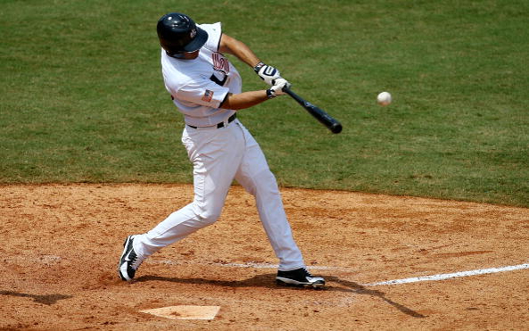
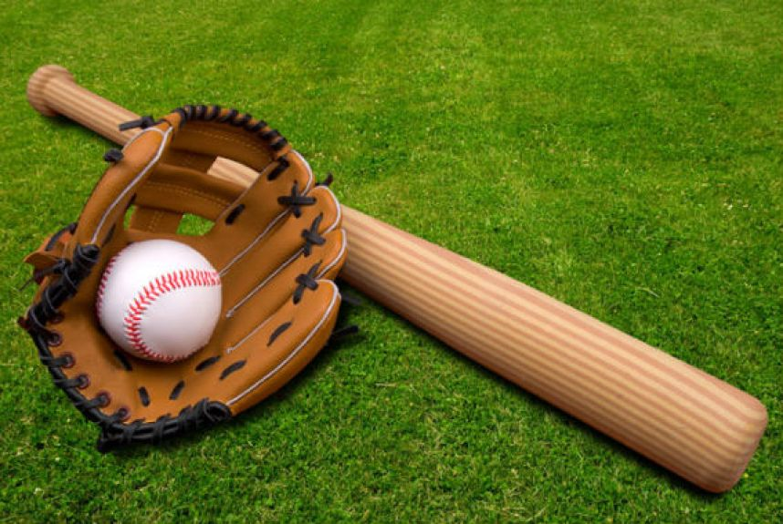

Информация о Бейсболе

Бейсбол — это командная игра, которая играется мячом и клюшкой на поле с овальными базами. Этот вид спорта очень популярен в Северной Америке, Японии и других странах. Бейсбол считается одним из самых старых и узнаваемых спортов в мире.
Вот основные аспекты бейсбола:
Игровое поле:
Игровое поле бейсбола имеет форму четверти окружности и размечено базами. Центральная база (главная база) находится в центре, а вокруг нее располагаются первая, вторая и третья базы.
Команды:
Бейсбол играют две команды — нападающая (бэттерс) и защищающая (питчерс и игроки в поле). В команде нападающих обычно 9 игроков, включая бэттера и бегуна на базе.
Мяч и клюшка:
Игра начинается с мяча, который питчер (игрок, бросающий мяч) бросает к бэттеру (игроку, который стоит у базы). Бэттер пытается ударить мяч клюшкой и отправить его в поле.
Основные действия:
Бейсбол включает в себя разнообразные действия, такие как броски (питчи), удары, бег по базам, ауты и заброшенные мячи.
Бег по базам:
Когда бэттер попадает мячем в поле, он пытается как можно быстрее добежать до первой базы. Если он успевает, то он становится "бегуном". Затем его задача — перейти на следующие базы, пока команда не забросит мяч в игру или пока он не вернется на базу, чтобы избежать "аута".
Ауты:
Аут — это ситуация, когда игрок команды нападающих выбывает из игры. Аут может произойти, если бэттер промахивается три раза, питчер выбивает бэттера мячом, который ловится в полете, или если игрок, бегущий по базам, выбивается из игры до того, как вернется на базу.
Счет:
Команда, которая набирает больше очков, выигрывает. Очки начисляются, когда бегун достигает домашней (четвертой) базы.
Инфилд и аутфилд:
Поле разделено на инфилд (внутреннее поле) и аутфилд (внешнее поле). Игроки в инфилде защищают базы, а игроки в аутфилде пытаются поймать мячи, брошенные бэттерами.
Дополнительные правила:
Бейсбол имеет множество дополнительных правил и деталей, таких как забеги в ситуациях с бегунами, специальные броски питчера, тактики и стратегии игры.
Профессиональные лиги:
В Северной Америке наиболее известная профессиональная лига — это Мейджор Лиг Бейсбол (MLB), включающая в себя команды из США и Канады.
Бейсбол является настоящей командной стратегической игрой, где каждый бросок, удар и действие имеют важное значение. Это один из символов американской культуры и спорта, который также находит своих поклонников во многих странах.
советы

Стать бейсболистом требует упорства, тренировок и преданности. Вот некоторые шаги, которые помогут вам начать свой путь к становлению бейсболистом:
Изучите игру:
Познакомьтесь с правилами бейсбола, разберитесь в основных понятиях и стратегиях игры. Чтение книг, просмотр видеоуроков и наблюдение за матчами помогут вам понять основы.
Выбор позиции:
Разберитесь, в какой роли вы хотите играть. В бейсболе есть разные позиции, такие как питчер, бэттер, защитник на разных базах, игрок в аутфилде и др.
Тренировки:
Отдавайте много времени тренировкам. Развивайте навыки метания, ударов, ловли мячей, бега по базам и другие аспекты игры.
Работа с тренером:
Наймите квалифицированного тренера, который поможет вам развить технические навыки и стратегическое мышление. Тренерский опыт поможет вам продвигаться вперед быстрее и более эффективно.
Участие в команде:
Присоединитесь к местной бейсбольной команде или лиге. Игра в команде поможет вам развивать сотрудничество, понимание тактики и получать игровой опыт.
Физическая подготовка:
Бейсбол требует хорошей физической формы. Работайте над выносливостью, силой, гибкостью и скоростью.
Самосовершенствование:
Анализируйте свои игры и тренировки. Работайте над устранением слабых сторон и постоянно стремитесь к улучшению.
Участие в соревнованиях:
Принимайте участие в местных турнирах и лигах, чтобы получить игровой опыт и оценить свой прогресс.
Профессиональные возможности:
Если ваша цель — стать профессиональным бейсболистом, рассмотрите возможности вступления в юношеские академии или программы развития, которые могут предоставить дополнительное обучение и игровой опыт.
Постоянство и упорство:
Путь к успеху в бейсболе требует времени и усилий. Будьте готовы сталкиваться с трудностями, но не теряйте мотивацию и продолжайте работать над собой.
Правильный образ жизни:
Заботьтесь о своем здоровье, питании и сне. Правильный образ жизни поможет вам быть в хорошей физической и психологической форме.
Общение с опытными игроками:
Общение с теми, кто имеет опыт в бейсболе, может предоставить вам ценные советы и наставничество.
Помните, что развитие навыков в бейсболе — это постоянный процесс. Наслаждайтесь игрой, учебой и постоянно стремитесь стать лучше.